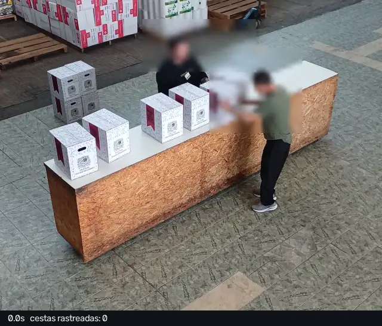

Uma câmera sobre a bancada conta cada cesta que sai do palete e cada cesta entregue — e avisa na hora quando a conta não fecha.
O modelo 3D não carrega quando a página é aberta direto do disco: o navegador bloqueia a leitura do arquivo.
python -m http.server --directory docs/vitrine
e abra http://localhost:8000
A câmera não "entende a operação". Ela responde uma pergunta simples, trinta vezes por segundo: em que zona está cada cesta? O resto é regra de negócio.
Um modelo YOLO treinado com fotos da própria operação devolve uma caixa por cesta.
cesta 0.92ByteTrack dá um número a cada objeto e o segue de frame em frame. Sem isso, a mesma cesta seria contada trinta vezes.
#41Polígonos desenhados sobre a imagem: paletes, bancada (em L ou reta) e fora. Mudou de zona e ficou: transição.
paletes->bancadaVai-e-volta em menos de 4 s se anula. Pilha de 2 conta 2. Palete → fora sem passar pela bancada é entrega direta.
anulado · direta · ×2Cada evento vai para o banco com hora, id, transição e o frame anotado. Toda divergência tem endereço.
eventos.sqliteTrês vêm da câmera, dois vêm da operação como ela já é. Cada par que não fecha vira uma ocorrência — com snapshots — em vez de uma diferença descoberta no fim do dia.
| Número | Origem | Deve bater com | |
|---|---|---|---|
| A | Processadas = paletes→bancada + paletes→fora | câmera | D |
| B | Entregues = bancada→fora + paletes→fora (+ lotes declarados) | câmera | E |
| C | Saldo na bancada = A − B | câmera (derivado) | cestas visíveis na bancada agora |
| D | Esperado = paletes esvaziados × 40 | operação (5 camadas × 8) | A |
| E | Vales recolhidos | operação (papel) | B |
Pipeline completo rodando num vídeo público: detecção, tracking, zonas, vai-e-volta e banco de eventos.
Celular fixo, 3–4 pessoas, 20–40 cestas, 5 roteiros (normal, vai-e-volta, pilhas, entrega direta, pico) com contagem manual.
~300 frames anotados; YOLO aprende cesta, pilha2 e palete. Meta: mAP ≥ 0,85.
Zonas sobre o L. Erro ≤ 5% nos vídeos antes de comprar a câmera; 1 h real ≥ 95% antes de confiar.
Palete × 40, vales, entregas em lote, divergências com snapshot.
A tela da tenda: processadas, entregues, saldo, divergências abertas, cestas por hora.
Tudo acima desta linha é simulação. Isto aqui não é: 63 segundos gravados no almoxarifado em 21/09, com contagem manual feita à parte para servir de gabarito. O modelo treinado ainda não existe — quem detectou foi um YOLO-World genérico, guiado só pela palavra box.

Cada fio é uma pessoa seguida quadro a quadro. O fio destacado é o operador: 52,7 s de identidade contínua, 316 amostras, e só 3 saltos acima de 5% do quadro. Os 16 objetos-cesta do mesmo vídeo não sobreviveram a uma única saída da zona. A diferença não é o algoritmo — é o que o detector consegue enxergar.
Por que as entregas deram zero. Contar entrega exige seguir a mesma cesta saindo da bancada. Os 16 objetos rastreados nasceram e morreram dentro da zona: quando o funcionário pega a cesta e a encosta no corpo, o detector genérico a perde antes que ela cruze a borda. A saída fica invisível para a regra. A curva não depende disso — ela só pergunta quantas cestas há na bancada agora, quadro a quadro, sem precisar de identidade. Por isso um número bate e o outro não. As duas correções conhecidas são a Fase 2 (modelo treinado em cesta, que não perde o objeto na mão) e a Fase 3 (câmera fixa; aqui o celular estava na mão e derivou 10% do quadro).
Na animação acima, as cestas são desenhadas — a detecção por IA entra na Fase 2. A seção anterior, essa sim, é medição: vídeo real, detecção real, gabarito conferido à mão, inclusive o número que não fechou. As regras são as do código real: zonas, confirmação de transição, anulação de vai-e-volta, entrega direta e a conferência contado × visível já rodam no protótipo (Fase 0). A foto é da mesa usada em 2025, que na tenda vira um L; a pessoa ao fundo foi desfocada. Os números começam de um turno em andamento para caber em um minuto.